Langkah-langkah Menginstal Fedora Linux
Instalasi sistem dasar sangatlah mudah 1-2-3 karena installer Fedora tidak menawarkan banyak pilihan untuk dipilih, sehingga Anda tidak bisa salah.
Download Fedora 17 iso image dari http://fedoraproject.org/get-fedora , membakarnya ke disk, dan boot komputer Anda dari itu:
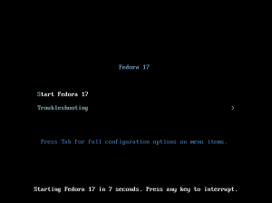
Instal dengan mengklik Install untuk Hard Drive
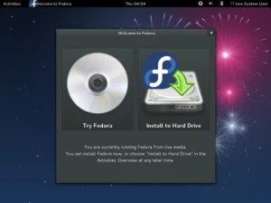
Pilih layout keyboard Anda dan klik tombol Next untuk melanjutkan
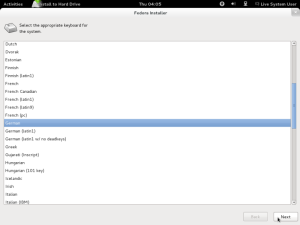
Anda harus memilih Storage Device Dasar sini:
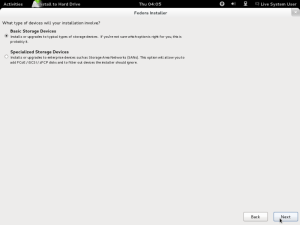
Jika Anda melihat pesan berikut (. Perangkat penyimpanan di bawah ini mungkin berisi data), silakan klik Ya, membuang data karena kita ingin menginstal sistem segar (semua data yang ada pada drive akan dihapus):
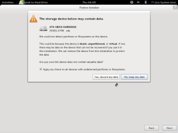
Anda dapat meninggalkan nama host apa adanya dan klik Next:
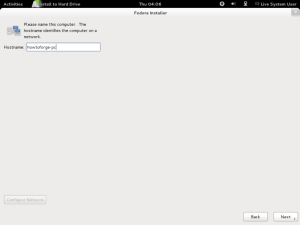
Lalu pilih zona waktu Anda:
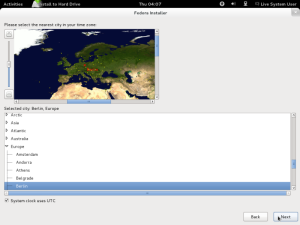
Ketik password root (dua kali untuk memverifikasi itu):
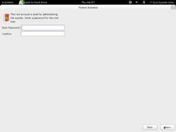
Partisi default adalah ok, jadi anda dapat menekan Next:
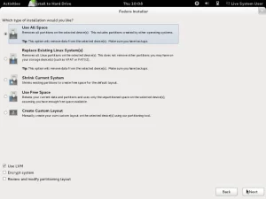
Konfirmasikan dengan mengklik Tulis perubahan ke disk:
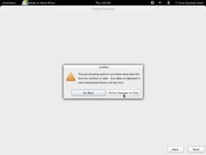
Instalasi dimulai. Hal ini dapat memakan waktu beberapa menit:
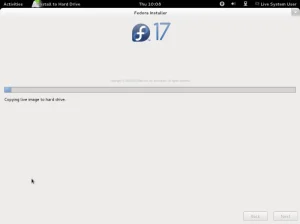
Instalasi selesai. Klik Reboot dan jangan lupa untuk menghapus Live CD dari hard disk sebelum sistem boot lagi!
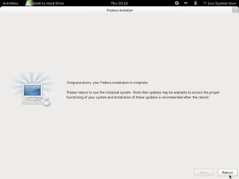
Pilih desktop Fedora pada saat reboot:
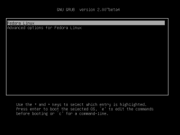
Jika sistem booting untuk pertama kalinya, wizard boot pertama muncul. Klik Teruskan …
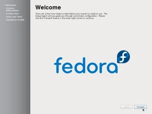
Baca informasi Lisensi dan dilanjutkan:
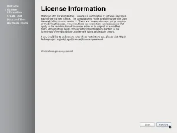
Kemudian tambahkan account user biasa ke sistem (saya akan menciptakan howtoforge pengguna di sini):
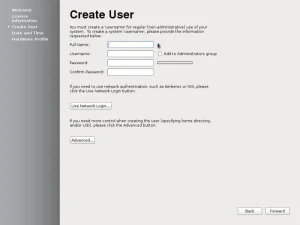
Mengatur tanggal dan waktu. Jika Anda memiliki akses internet, itu ide yang baik untuk menyinkronkan mereka melalui jaringan. Centang kotak yang sesuai jika Anda ingin melakukan itu dan dilanjutkan:
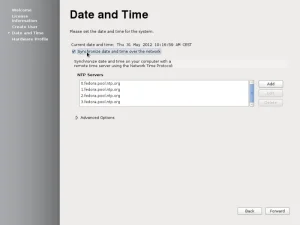
Pada layar berikutnya Anda dapat mengirim rincian tentang hardware anda untuk proyek Fedora untuk membantu mereka mengembangkan perangkat lunak. Terserah Anda apakah Anda ingin mengirimkan rincian ini atau tidak:
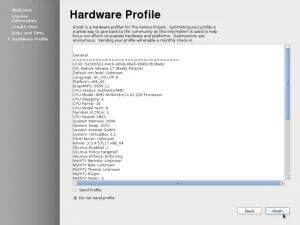
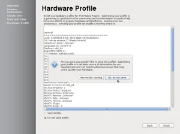
Sekarang kita sudah selesai dengan wizard boot pertama, kita dapat login ke desktop baru kami dengan user yang baru saja kita buat. Nama yang akan ditampilkan kepada Anda tidak username tapi yang Anda masukkan dalam kolom Nama Lengkap:
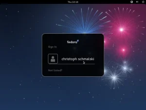
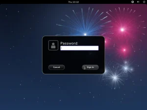